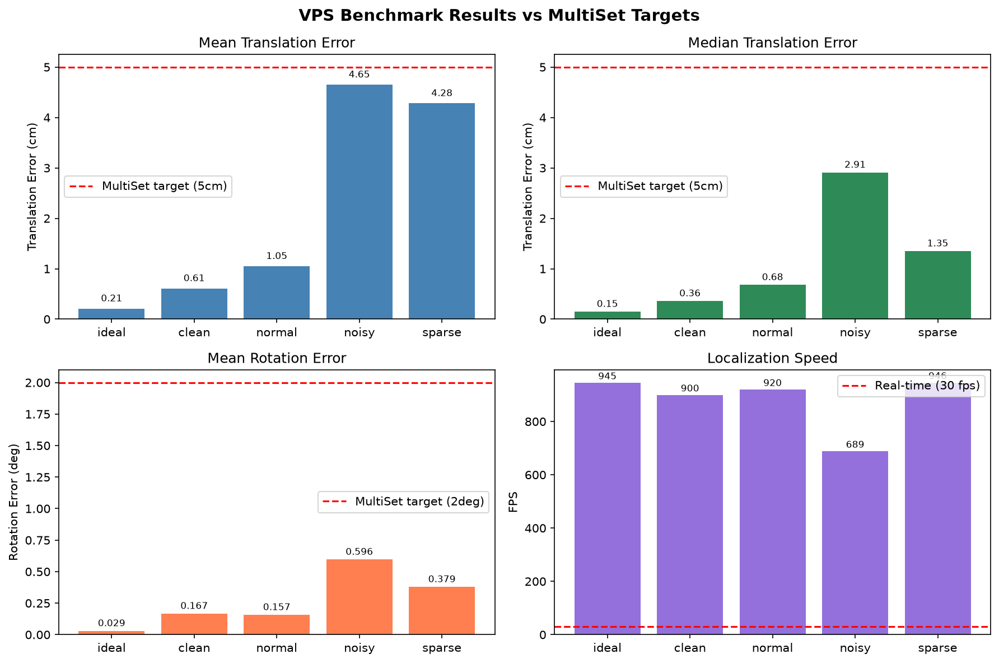
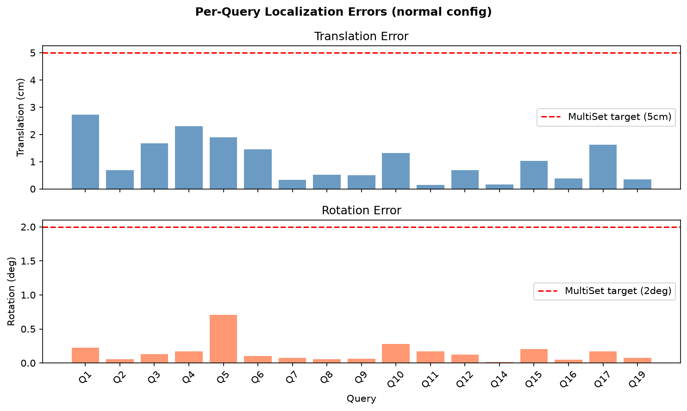

Centimeter-accurate 6-DoF localization using camera input. 9 platform SDKs, 8 AI runtimes, full ROS2 integration.
From coarse retrieval to fine pose estimation, VPS handles the full pipeline.
DINOv2 global descriptors for fast coarse localization across large environments.
SuperPoint + SuperGlue for robust keypoint detection and matching.
PnP + RANSAC for centimeter-accurate 6-DoF pose from 2D-3D correspondences.
WebSocket + SSE for 30+ FPS video frame processing with GPU acceleration.
PyTorch, ONNX, TensorRT, OpenVINO, CoreML, NCNN, TFLite, MLKit.
First-class Nav2, MoveIt, TF2, Gazebo, Isaac Sim integration.
Hardware, OS, and AI framework agnostic.
Every component is replaceable. Use what you need.
Real measured numbers from our synthetic 3D indoor benchmark (12,200 map points, 20 queries, CPU-only).
MultiSet target: < 5 cm
All configs PASS ✓
MultiSet target: < 2°
All configs PASS ✓
MultiSet: ~30 fps real-time
24–31× faster than real-time ✓


Full report: benchmark/VPS_vs_MULTISET.md
Clone the repo, build a map, localize in under 5 minutes.